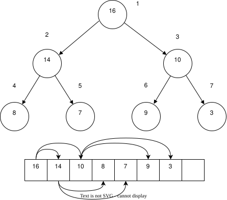
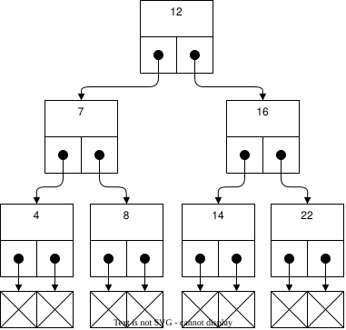
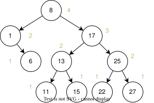
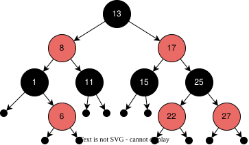
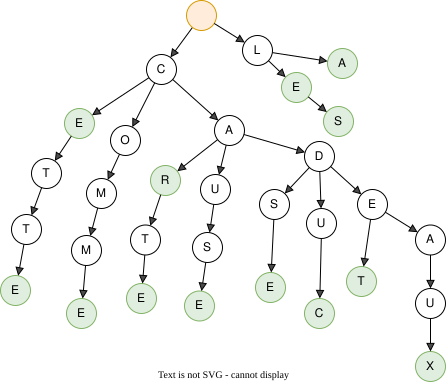
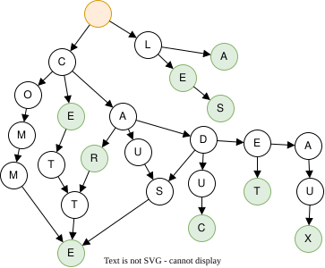

Arbres¤

Les arbres sont des structures de données non linéaires composées de nœuds. Chaque nœud possède un ou plusieurs enfants, à l’exception de la racine qui n'a pas de parent. Les arbres servent fréquemment à modéliser des hiérarchies telles que les systèmes de fichiers, les arbres généalogiques ou encore les arbres de décision.
Voici un exemple d'arbre : il représente une structure de documents stockés sur un ordinateur. En haut figure le disque C :, qui contient des dossiers et des fichiers. Chaque dossier peut abriter d'autres dossiers ou des fichiers. Il existe donc une hiérarchie entre les éléments : chaque dossier accepte plusieurs contenus, mais chaque élément appartient à un seul dossier.
Ce type d'arbre est appelé arbre n-aire dirigé : chaque nœud peut avoir plusieurs enfants et les arêtes suivent un sens unique de la racine vers les feuilles. Les flèches indiquent ainsi la direction de la hiérarchie.
graph LR
C(C:)
C --> Program_Files(Program Files)
C --> Users(Utilisateurs)
Program_Files --> Microsoft(Microsoft)
Program_Files --> Adobe(Adobe)
Program_Files --> Google(Google)
Microsoft --> Office(Office)
Microsoft --> Edge(Edge)
Microsoft --> Teams(Teams)
Google --> Chrome(Chrome)
Google --> Drive(Drive)
Users --> Bob(Bob)
Users --> Alice(Alice)
Bob --> Documents(Documents)
Bob --> Downloads(Downloads)
Bob --> Music(Music)
Alice --> Documents_Alice(Documents)
Alice --> Downloads_Alice(Downloads)
Documents --> Resume(Resume.docx)
Documents --> Project(Project.docx)
Downloads --> Installer(Installer.exe)
Downloads --> Music_Bob(Music.mp3)
Music --> Album1(Album1)
Music --> Album2(Album2)
Album1 --> Song1(pink-floyd.mp3)
Album1 --> Song2(dorothée.mp3)
Documents_Alice --> Thesis(Thesis.docx)
Documents_Alice --> Notes(Notes.txt)
Downloads_Alice --> App(App.exe)Arbre binaire¤
Un arbre binaire est un arbre dans lequel chaque nœud possède au plus deux enfants, généralement appelés fils gauche et fils droit. Les arbres binaires servent couramment à implémenter des structures comme les arbres de recherche, les tas ou les arbres d'expression.
Il s'agit d'une structure de données très répandue en informatique. En pratique, on implémente rarement un arbre binaire nu : on privilégie des structures de plus haut niveau qui s'appuient sur cette représentation.
Le langage C étant très bas niveau, il ne propose pas de structure d'arbre binaire dans sa bibliothèque standard. En C++, de nombreux conteneurs reposent en revanche sur des arbres binaires, comme std::set, std::map, std::multiset, std::multimap ou std::priority_queue.
Voici un exemple d'arbre binaire. Chaque nœud possède deux enfants, sauf les feuilles qui n'en ont aucun. Le nœud 40, par exemple, ne dispose que d'un enfant à droite.
graph TD
classDef ghost display: none;
50((50))
50 --> 30((30))
50 --> 70((70))
30 --> 20((20))
30 --> 40((40))
70 --> 60((60))
70 --> 80((80))
20 --> 10((10))
20 --> 25((25))
40 --> ghost1(( ))
40 --> 35((35))
60 --> 55((55))
60 --> 65((65))
80 --> 75((75))
80 --> 90((90))
class ghost1 ghost;
linkStyle 8 display: none;Un arbre peut être équilibré ou déséquilibré. Il est dit équilibré lorsque la hauteur de ses sous-arbres gauche et droit diffère d'au plus une unité. Cette propriété garantit des opérations de recherche, d'insertion et de suppression plus efficaces.
Voici l'exemple d'un arbre déséquilibré :
graph LR
classDef ghost display: none;
50((42))
50 --> 30((30))
50 --> 70((70))
30 --> 20((20))
30 --> 40((40))
70 --> 60((60))
70 --> 80((80))
20 --> 10((10))
60 --> 55((55))
10 --> 12((12))
10 --> 23((23))
23 --> 35((35))Heap¤
La structure de données heap, ou tas binaire, ne doit pas être confondue avec la zone mémoire du même nom utilisée pour l'allocation dynamique. Il s'agit d'une forme particulière d'arbre binaire dit « presque complet », dans lequel l'écart de niveau entre les feuilles n'excède pas une unité : toutes les feuilles se situent à la même profondeur ou à une profondeur voisine.
Un tas peut aisément être représenté sous forme de tableau en utilisant la règle suivante :
| Cible | Début à 0 | Début à 1 |
|---|---|---|
| Enfant de gauche | \(2k + 1\) | \(2k\) |
| Enfant de droite | \(2k + 2\) | \(2k + 1\) |
| Parent | \(\lfloor (k - 1) / 2 \rfloor\) | \(\lfloor k / 2 \rfloor\) |


Min-heap¤
Un tas binaire stocke des éléments en conservant un ordre partiel. C'est un arbre binaire complet dans lequel chaque nœud est plus petit que ses enfants. Les tas binaires sont fréquemment utilisés pour implémenter des files de priorité.
Implémentation en C
#pragma once
#include <stddef.h>
#include <stdio.h>
typedef struct MinHeap MinHeap;
MinHeap *min_heap_create(size_t element_size,
int (*compare)(const void *, const void *),
void (*free_function)(void *));
void min_heap_destroy(MinHeap *heap);
int min_heap_insert(MinHeap *heap, void *element);
void *min_heap_extract_min(MinHeap *heap);
size_t min_heap_size(MinHeap *heap);
void min_heap_to_mermaid(MinHeap *heap, FILE *output, void (print_element)(void *element, FILE *output));
#include "min-heap.h"
#include "vector.h"
#include <stdlib.h>
#include <stdio.h>
struct MinHeap {
Vector *vector;
int (*compare)(const void *, const void *);
};
static void swap(void **a, void **b) {
void *temp = *a;
*a = *b;
}
static void heapify_up(MinHeap *heap, size_t index) {
if (index == 0) return;
size_t parent_index = (index - 1) / 2;
if (heap->compare(vector_get(heap->vector, index), vector_get(heap->vector, parent_index)) < 0) {
swap(&heap->vector->data[index], &heap->vector->data[parent_index]);
heapify_up(heap, parent_index);
}
}
static void heapify_down(MinHeap *heap, size_t index) {
size_t left_child = 2 * index + 1;
size_t right_child = 2 * index + 2;
size_t smallest = index;
if (left_child < vector_size(heap->vector) &&
heap->compare(vector_get(heap->vector, left_child), vector_get(heap->vector, smallest)) < 0) {
smallest = left_child;
}
if (right_child < vector_size(heap->vector) &&
heap->compare(vector_get(heap->vector, right_child), vector_get(heap->vector, smallest)) < 0) {
smallest = right_child;
}
if (smallest != index) {
swap(&heap->vector->data[index], &heap->vector->data[smallest]);
heapify_down(heap, smallest);
}
}
MinHeap *min_heap_create(size_t element_size, int (*compare)(const void *, const void *), void (*free_function)(void *)) {
MinHeap *heap = (MinHeap *)malloc(sizeof(MinHeap));
if (!heap) return NULL;
heap->vector = vector_create(element_size, free_function);
if (!heap->vector) {
free(heap);
return NULL;
}
heap->compare = compare;
return heap;
}
void min_heap_destroy(MinHeap *heap) {
if (heap) {
vector_destroy(heap->vector);
free(heap);
}
}
int min_heap_insert(MinHeap *heap, void *element) {
if (vector_push_back(heap->vector, element) != 0) return -1;
heapify_up(heap, vector_size(heap->vector) - 1);
return 0;
}
void *min_heap_extract_min(MinHeap *heap) {
if (vector_size(heap->vector) == 0) return NULL;
void *min_element = vector_get(heap->vector, 0);
void *last_element = vector_get(heap->vector, vector_size(heap->vector) - 1);
vector_set(heap->vector, 0, last_element);
heap->vector->size--; // Adjust size without deallocating the last element
heapify_down(heap, 0);
return min_element;
}
size_t min_heap_size(MinHeap *heap) {
return vector_size(heap->vector);
}
void min_heap_to_mermaid(MinHeap *heap, FILE *output, void (print_element)(void *element, FILE *output)) {
fprintf(output, "graph TD\n");
for (size_t i = 0; i < vector_size(heap->vector); i++) {
fprintf(output, " %zu((\"", i);
if (print_element) {
print_element(vector_get(heap->vector, i), output);
} else {
fprintf(output, "%d", *(int *)vector_get(heap->vector, i));
}
fprintf(output, "\"))\n");
}
for (size_t i = 0; i < vector_size(heap->vector); i++) {
if (i > 0) {
size_t parent = (i - 1) / 2;
fprintf(output, " %zu --> %zu\n", parent, i);
}
}
}
Le tas binaire s'appuie sur un tableau dynamique pour stocker les éléments. Chaque nœud voit son enfant gauche à l'indice 2 * k + 1 et son enfant droit à l'indice 2 * k + 2. Le parent d'un élément se trouve à l'indice (k - 1) / 2, quel que soit l'indice k.
La propriété principale du tas binaire impose que chaque nœud soit plus petit que ses enfants. La racine est donc le plus petit élément. Lorsqu'on retire une valeur, on supprime la racine et on la remplace par le dernier élément du tableau, puis on réorganise le tas pour restaurer l'invariant. Cette opération est appelée heapify.
L'algorithme heapify est récursif : il sert à rétablir la propriété du tas binaire. On part du dernier élément qui possède au moins un enfant, on compare sa valeur à celle de ses enfants et, si nécessaire, on échange les éléments. L'opération se poursuit récursivement jusqu'à ce que l'invariant soit satisfait.
Lorsqu'on insère un nouvel élément dans le tableau, on l'ajoute à la fin puis on restaure l'invariant du tas binaire. On compare la valeur introduite avec celle de son parent ; si elle est plus petite, on échange les deux et l'on remonte récursivement jusqu'à ce que la propriété soit respectée.
Prenons l'exemple initial de cet arbre stocké en tableau :
graph TD
1((1)) --> 3((3))
1((1)) --> 6((6))
3((3)) --> 5((5))
3((3)) --> 9((9))
6((6)) --> 8((8))On souhaite rajouter l'élément 2. On commence par l'ajouter à la fin :
graph TD
1((1)) --> 3((3))
1((1)) --> 6((6))
3((3)) --> 5((5))
3((3)) --> 9((9))
6((6)) --> 8((8))
6((6)) --> 2((2))On compare la valeur de 2 avec celle de son parent 6. Comme 2 est plus petit que 6, on échange les valeurs :
graph TD
1((1)) --> 3((3))
1((1)) --> 2((2))
3((3)) --> 5((5))
3((3)) --> 9((9))
2((2)) --> 8((8))
2((2)) --> 6((6))On continue avec le parent de 2, 1. Comme 2 est plus grand que 1, on s'arrête là. Le tas binaire est maintenant rétabli.
Les utilisations les plus courantes de cette structure de donnée sont :
- Tri par tas (Heap sort)
- Une queue prioritaire (Priority queue)
- Déterminer le k-ième élément le plus petit d'une collection (k-th smallest element)
Voici un tableau résumant les complexités des différentes opérations dans un tas binaire minimal :
| Opération | Complexité |
|---|---|
| Insertion | \(O(log n)\) |
| Extraction du minimum | \(O(log n)\) |
| Accès au minimum | \(O(1)\) |
| Construction | \(O(n)\) ou \(O(n log n)\) |
| Suppression | \(O(log n)\) |
| Mise à jour d'un élément | \(O(log n)\) |
-
Insertion : Lorsqu'un élément est ajouté au min-heap, il est ajouté à la fin et le processus de heapify up (ou bubble up) est effectué pour rétablir la propriété du tas. Ce processus implique de comparer et potentiellement d'échanger des éléments à chaque niveau de l'arbre, ce qui prend \(O(log n)\) dans le pire des cas.
-
Extraction du minimum : L'extraction de l'élément minimum implique de retirer la racine du tas (le plus petit élément), de placer le dernier élément de l'arbre à la racine, puis d'effectuer heapify down (ou sift down) pour rétablir la propriété du tas. Cela prend \(O(log~n)\) car il peut nécessiter de descendre jusqu'au niveau le plus bas de l'arbre.
-
Accès au minimum : L'accès au minimum est \(O(1)\) car l'élément minimum est toujours à la racine du tas.
-
Construction : La complexité de la construction d'un tas à partir d'une liste non triée peut être \(O(n)\) en utilisant une technique appelée heapify (ou build-heap). Cependant, si vous insérez chaque élément un par un en utilisant la méthode d'insertion standard, la complexité serait \(O(n~log~n)\).
-
Suppression : La suppression d'un élément (autre que la racine) implique de le remplacer par le dernier élément du tas et d'effectuer heapify up ou heapify down selon le cas, ce qui prend O(log~n).
-
Mise à jour d'un élément : La mise à jour d'un élément peut nécessiter soit heapify up soit heapify down pour rétablir la propriété du tas, ce qui prend \(O(log n)\).
Ces complexités font des min-heaps une structure de données efficace pour les files de priorité et les algorithmes nécessitant des opérations fréquentes d'insertion et d'extraction du minimum.
Arbre binaire de recherche¤
Un arbres binaires de recherche (Binary Search Tree, BST) est un arbre binaire dans lequel chaque nœud a une valeur et les valeurs des nœuds de l'arbre sont ordonnées. Pour chaque nœud, toutes les valeurs des nœuds du sous-arbre gauche sont inférieures à la valeur du nœud et toutes les valeurs des nœuds du sous-arbre droit sont supérieures à la valeur du nœud.
L'implémentation d'un arbre binaire est souvent implémentée avec une liste chaînée comportant deux enfants un left et un right :


Lorsqu'il est équilibré, un arbre binaire comporte autant d'éléments à gauche qu'à droite et lorsqu'il est correctement rempli, la valeur d'un élément est toujours :
- La valeur de l'enfant de gauche est inférieure à celle de son parent
- La valeur de l'enfant de droite est supérieure à celle de son parent
Cette propriété est très appréciée pour rechercher et insérer des données complexes. Admettons que l'on a un registre patient du type :
struct patient {
size_t id;
char firstname[64];
char lastname[64];
uint8_t age;
}
typedef struct node {
struct patient data;
struct node* left;
struct node* right;
} Node;
Si l'on cherche le patient numéro 612, il suffit de parcourir l'arbre de façon dichotomique :
Node* search(Node* node, size_t id)
{
if (node == NULL)
return NULL;
if (node->data.id == id)
return node;
return search(node->data.id > id ? node->left : node->right, id);
}
L'insertion et la suppression d'éléments dans un arbre binaire font appel à des rotations, puisque les éléments doivent être insérés dans le correct ordre et que l'arbre, pour être performant, doit toujours être équilibré. Ces rotations sont donc des mécanismes de rééquilibrage de l'arbre ne sont pas triviaux, mais dont la complexité d'exécution reste simple, et donc performante.
Queue prioritaire¤
Une queue prioritaire ou priority queue, est une queue dans laquelle les éléments sont traités par ordre de priorité. Imaginons des personnalités, toutes atteintes d'une rage de dents et qui font la queue chez un dentiste aux mœurs discutables. Ce dernier ne prendra pas ses patients par ordre d'arrivée, mais, par importance aristocratique.
typedef struct Person {
char *name;
enum SocialStatus {
PEON;
WORKER;
ENGINEER;
DOCTOR;
PROFESSOR;
PRESIDENT;
SUPERHERO;
} status;
} Person;
int main() {
ProrityQueue queue;
queue_init(queue);
for(int i = 0; i < 100; i++) {
queue_enqueue(queue, (Person) {
.name = random_name(),
.status = random_status()
});
Person person;
queue_dequeue(queue, &person);
dentist_heal(person);
}
}
La queue prioritaire dispose donc aussi des méthodes enqueue et dequeue mais le dequeue retournera l'élément le plus prioritaire de la liste. Ceci se traduit par trier la file d'attente à chaque opération enqueue ou dequeue. L'une de ces deux opérations pourrait donc avoir une complexité de \(O(n log n)\). Heureusement, il existe des méthodes de tris performantes si un tableau est déjà trié et qu'un seul nouvel élément y est ajouté.
L'implémentation de ce type de structure de donnée s'appuie le plus souvent sur un heap, soit construite à partir d'un tableau statique, soit un tableau dynamique.
Arbre AVL¤
Un arbre AVL est un arbre binaire de recherche équilibré. Il est équilibré car la hauteur de ses sous-arbres gauche et droit diffère d'au plus un. Cela signifie que la hauteur de l'arbre est en \(O(log n)\), ce qui rend les opérations de recherche, d'insertion et de suppression en \(O(log n)\).


AVL tire son nom de ses inventeurs Adelson-Velsky and Landis. C'est une structure de données très utilisée en informatique pour implémenter des dictionnaires, des bases de données, des compilateurs, etc.
Son implémentation complète sort du cadre de ce cours mais il est intéressant de comprendre comment il fonctionne. L'arbre AVL est un arbre binaire de recherche où chaque nœud a un facteur d'équilibre qui est la différence entre la hauteur de son sous-arbre gauche et la hauteur de son sous-arbre droit. Si le facteur d'équilibre d'un nœud est supérieur à \(1\) ou inférieur à \(-1\), l'arbre est déséquilibré et il faut le rééquilibrer. Cela donne un critère de rééquilibrage en fonction du facteur d'équilibre.
L'opération d'insertion dans un arbre AVL est similaire à celle d'un arbre binaire de recherche. On insère le nœud à la bonne place dans l'arbre. Puis on met à jour le facteur d'équilibre de chaque nœud sur le chemin de la racine. Si le facteur d'équilibre d'un nœud est supérieur à \(1\) ou inférieur à \(-1\), on rééquilibre l'arbre en effectuant des rotations.
C'est cette opération de rotation qui est la plus complexe dans un arbre AVL. Il existe plusieurs types de rotations en fonction du facteur d'équilibre du nœud. Il y a les rotations simples et les rotations doubles. Les rotations simples sont les rotations droite et gauche. Les rotations doubles sont les rotations gauche-droite et droite-gauche.
Arbre rouge-noir¤
Un arbre rouge-noir est un arbre binaire de recherche équilibré. Il est équilibré car la hauteur de ses sous-arbres gauche et droit diffère d'au plus deux. Cela signifie que la hauteur de l'arbre est en \(O(log n)\), ce qui rend les opérations de recherche, d'insertion et de suppression en \(O(log n)\).


Contrairement à l'arbre AVL, l'arbre rouge-noir est plus simple à implémenter. Il utilise un bit de couleur pour chaque nœud pour indiquer si le nœud est rouge ou noir. L'arbre rouge-noir a cinq propriétés :
- Chaque nœud est soit rouge, soit noir.
- La racine est noire.
- Toutes les feuilles (nœuds NULL) sont noires.
- Si un nœud est rouge, alors ses deux enfants sont noirs. (Pas de deux rouges consécutifs sur un chemin vers une feuille)
- Tout chemin simple d'un nœud donné à ses feuilles descendantes contient le même nombre de nœuds noirs.
De la même manière que l'arbre AVL, il y a des opérations de rotation pour rééquilibrer l'arbre rouge-noir. Les rotations sont plus simples que dans un arbre AVL car il n'y a que deux types de rotations : la rotation gauche et la rotation droite.
Trie¤
Un trie est une structure de données qui stocke un ensemble de chaînes de caractères. Il est souvent utilisé pour stocker des mots dans un dictionnaire ou pour rechercher des mots dans un texte. Un trie est donc un arbre où chaque nœud est associé à une lettre et un marqueur de fin de mot. Un nœud peut avoir de 1 à 26 enfants, un pour chaque lettre de l'alphabet (si on se limite à l'alphabet latin minuscule).
Prenons l'exemple des mots suivants :
char *words[] = {
"cadeaux", "le", "car", "cette", "cadre", "cause",
"carte", "comme", "car", "ce", "caduc", "cadet",
"la", "la", "les"};
On peut construire le trie suivant :


En vert, les nœuds qui marquent la fin d'un mot. En orange la racine de l'arbre. La structure de données de chaque nœud pourrait être la suivante :
typedef struct Node {
int occurences; // Number of occurences of the word
struct Node *children[26]; // Children nodes
} Node;
Exercice 108 : Implémentation
Vous avez un texte connu et vous voulez permettre de compter les occurences de chaque mot. Une fois que le trie est construit, il est en lecture seule. Comment allez-vous implémenter le trie ?
- Comme une liste chaînée, chaque nœud est alloué dynamiquement sur le heap.
- Un tableau statique sur la pile ou chaque élément est un nœud.
- Un tableau dynamique sur le heap, l'allocation est amortie et chaque nœud contient un tableau de pointeurs sur ses enfants.
- Un tableau dynamique sur le heap, l'allocation est amortie et chaque nœud contient non pas un pointeur des enfants mais l'indice de l'enfant dans le tableau.
- Par chunks d'éléments, chaque chunk est alloué dynamiquement sur le heap.
Discutons de plusieurs implémentations possibles d'un nœud d'un trie :
-
Liste chaînée : Chaque nœud est alloué dynamiquement sur le heap. C'est une solution simple mais qui peut être coûteuse en mémoire et en temps d'allocation. Néanmoins le nœud peut prendre un tableau flexible pour les enfants. Ce qui permet de ne pas allouer de mémoire inutile.
-
Tableau dynamique : En stockant tous les éléments dans le tableau dynamique, on ne peut plus utiliser de pointeurs car si le tableau est réalloué, les pointeurs ne sont plus valides. On utilise donc des indices pour accéder aux enfants, car ces derniers sont relatifs à l'adresse de début du tableau. En revanche, on ne peut plus utiliser de tableau flexible pour les enfants car la taille de la structure doit être connue à la compilation. Ceci implique une utilisation de mémoire plus importante.
-
Chunks : Chaque chunk contient un certain nombre de nœuds. Un chaunk d'une taille donnée est réservée. Lorsque le chunk est plein, un nouveau chunk est alloué. Cela permet de réduire le nombre d'appels à
mallocet de réduire la fragmentation de la mémoire. Cette méthode permet de réduire le nombre d'appels àmallocet de réduire la fragmentation de la mémoire. Elle résoud aussi le problème de la taille fixe du tableau des enfants en autorisant à nouveau un tableau flexible.
Exemple d'implémentation :
#include <stdio.h>
#include <stdlib.h>
#include <string.h>
#define ALPHABET_SIZE 26
typedef struct Node {
int occurrences;
struct Node *children[ALPHABET_SIZE];
} Node;
Node* createNode() {
Node *node = (Node *)malloc(sizeof(Node));
if (node) {
node->occurrences = 0;
for (int i = 0; i < ALPHABET_SIZE; i++) {
node->children[i] = NULL;
}
}
return node;
}
void insert(Node *root, const char *word) {
Node *current = root;
while (*word) {
if (!current->children[*word - 'a']) {
current->children[*word - 'a'] = createNode();
}
current = current->children[*word - 'a'];
word++;
}
current->occurrences++;
}
int search(Node *root, const char *word) {
Node *current = root;
while (*word) {
if (!current->children[*word - 'a']) {
return 0;
}
current = current->children[*word - 'a'];
word++;
}
return current->occurrences;
}
void freeTrie(Node *root) {
for (int i = 0; i < ALPHABET_SIZE; i++) {
if (root->children[i]) {
freeTrie(root->children[i]);
}
}
free(root);
}
int main() {
Node *root = createNode();
insert(root, "frodo");
insert(root, "sam");
insert(root, "gandalf");
// Add more words as needed
printf("Occurrences of 'frodo': %d\n", search(root, "frodo"));
printf("Occurrences of 'sam': %d\n", search(root, "sam"));
printf("Occurrences of 'gandalf': %d\n", search(root, "gandalf"));
freeTrie(root);
}
Exercice 109 : Regroupement ?
Demandons-nous s'il ne serait pas préférable de regrouper les nœuds communs ensemble comme le montre la figure suivante :


D'après vous est-ce une bonne idée ? Pourquoi ?
Solution
Non, ce n'est pas une bonne idée. D'une part la figure n'est plus un arbre mais un graphe. Un graph peut avoir des cycles et donc des boucles infinies. Ensuite, regrouper les éléments communs ne peut être fait qu'à la fin de la construction du trie, lorsqu'elle est déjà allouée en mémoire. La complexité de l'optimisation n'est pas à négliger. Si la contrainte est l'utilisation de la mémoire, il est préférable d'utiliser une autre structure de donnée comme un radix trie.
Radix Trie¤
On l'a vu l'implémentation d'un trie est simple mais elle peut conduire à une utilisation excessive de la mémoire. En effet, chaque nœud contient un tableau de 26 éléments, même si un mot ne contient que quelques lettres. Pour réduire la consommation de mémoire, on peut utiliser un radix trie. Cet arbre est également nommé PATRICIA trie pour Practical Algorithm to Retrieve Information Coded in Alphanumeric.
Plutôt que de stocker une seule lettre par nœud, on stocke un préfixe commun à plusieurs mots. On peut alors réduire le nombre de nœuds et donc la consommation de mémoire.
Navigation dans un arbre¤
La navigation dans un arbre binaire est une opération courante. Il existe plusieurs façons de parcourir un arbre binaire :
- Parcours en profondeur (DFS pour Depth First Search) On commence par la racine, puis on visite le sous-arbre gauche, puis le sous-arbre droit. On peut faire un parcours en profondeur en pré-ordre, en in-ordre ou en post-ordre.
- Parcours en largeur (BFS pour Breadth First Search) On visite les nœuds de l'arbre de haut en bas et de gauche à droite. On utilise une file pour stocker les nœuds à visiter.
Parcours en profondeur¤
Le parcours en profondeur est une méthode de parcours d'un arbre binaire qui commence par la racine, puis visite le sous-arbre gauche, puis le sous-arbre droit. Il existe trois façons de parcourir un arbre en profondeur :
- Pré-ordre : On visite d'abord la racine, puis le sous-arbre gauche, puis le sous-arbre droit.
- In-ordre : On visite d'abord le sous-arbre gauche, puis la racine, puis le sous-arbre droit.
- Post-ordre : On visite d'abord le sous-arbre gauche, puis le sous-arbre droit, puis la racine.
L'implémentation peut se faire de manière récursive ou itérative. Voici un exemple d'implémentation récursive en C :
int dfs(Node* node, (void)(*visit)(Node*))
{
if (node == NULL)
return;
visit(node);
dfs(node->left, visit);
dfs(node->right, visit);
}
L'implémentation itérative utilise une pile pour stocker les nœuds à visiter. Voici un exemple d'implémentation itérative en C :
int dfs(Node* node, (void)(*visit)(Node*))
{
Stack stack;
stack_init(stack);
stack_push(stack, node);
while (!stack_empty(stack)) {
Node* current = stack_pop(stack);
visit(current);
if (current->right != NULL)
stack_push(stack, current->right);
if (current->left != NULL)
stack_push(stack, current->left);
}
}